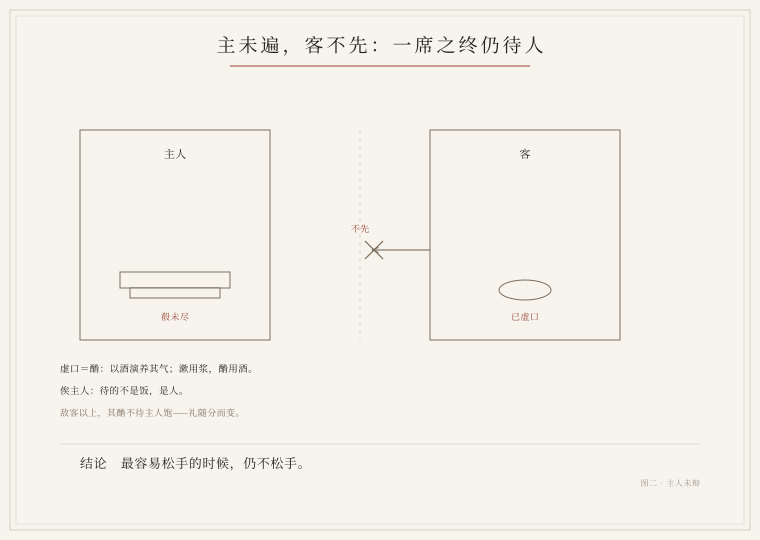

曲礼上 · 一·六十五 · 第 63 课
主人还没把殽吃遍，客人虽然已经吃遍，也不能就先漱口饮酒——要等主人。这是燕食之末的最后一道分寸。
说什么事：主人未辩，客不虚口。
落在哪一层：仪。上节讲食之次，此节讲食之终。
为何编在此位：一·六十四讲「至肩而止」，此节讲「止而犹待」；一节之末，仍不放松。
【经】主人未辯，客不虛口。
【注】俟主人也。虛口，謂酳也。客自敵以上，其酳不待主人飽，主人不先飽也。
虚口 注「谓酳也」。疏：「虚口谓食竟饮酒荡口，使清絜及安食也。用浆曰漱，令口以絜清为义；用酒曰酳，酳训演，言食毕以酒演养其气。」
主人未辩 辩，匝也。主人食殽未遍。
客不虚口 疏：「主人若食殽未辩，则客虽已辩，而不得辄酳漱也。」
俟主人也 注三字，是本节之骨：等。
客自敌以上，其酳不待主人饱 注。敌客以上不待，此礼限于卑客。
主人不先饱 注「缘主人不先饱，故待之也」。主人恒让客，不自先饱；客因此不得不待。
主人还没有把殽吃遍，客人不能先漱口饮酒。
一节六字，讲的是「最后一步也不僭」。吃的礼到此处将毕，主人未毕，客即不得先毕。礼之所以为礼，正在这些「将毕未毕」之处：最容易松手的时候，仍不松手。
第一层 虚口是酳 注以「酳」释「虚口」。酳是以酒演养其气，与以浆漱口不同：漱为洁，酳为养。此节所说的，是食毕那一口酒。
第二层 俟主人 客已饱、已遍，礼可毕，而主人未遍，则客仍待。待的不是饭，是人。
第三层 主人不先饱 注一句最见宾主之义：主人恒让客，不自先饱；因此主人常在后。客待主人，正是对这份「让」的回应。
第四层 分有差 「客自敌以上，其酳不待主人饱」。同一动作，故客须待，敌客不必待。礼随分而变，此节自标其界。
与今日何干 今人聚餐，先吃完的人先放筷、先离席。此节可作一提醒：主人未毕，客不宜先收；一席之终，也是待人的时候。
| 左 | 右 |
|---|---|
| 主人未辩 | 主人食殽未遍 |
| 客不虚口 | 客虽已遍，不得先酳漱 |
| 虚口 | 谓酳：以酒演养其气 |
| 俟主人 | 待的不是饭，是人 |
| 主人不先饱 | 主人让客，故常在后 |
| 敌客以上不待 | 礼随分而变，此限卑客 |
画案上两只小爵并置：左爵已空、爵底朝天侧放；右爵尚满、酒面平；两爵之间放一只小盂，盂中水未动。案角另有一具俎，俎上还剩一块带骨肉。不画人、不写文字。赭色只在满爵的流与盂沿。
